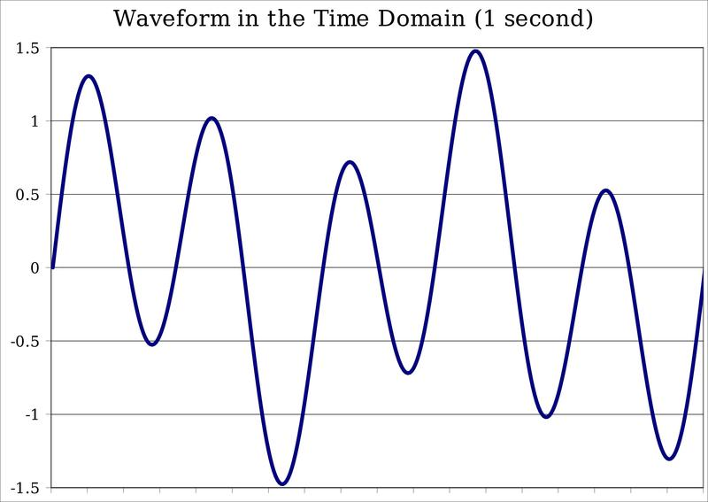
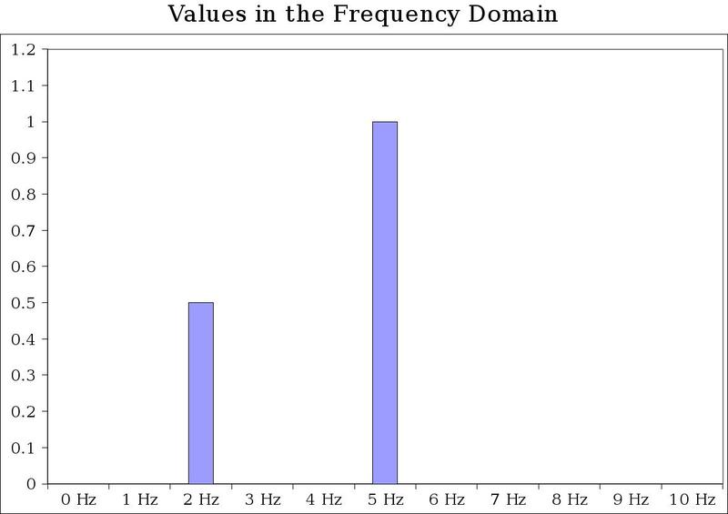

In February 2007, Microsoft lost a $1.5 billion judgment for infringing on MP3 patents, even though Microsoft had licensed MP3! The problem with MP3 is that multiple companies have patent claims, which makes the situation a particular mess. We can argue as to whether patents add value, but they indisputably add costs.
The Software Freedom Law Center calculates that Microsoft has paid $4 billion in lawsuits in the last three years to companies who have won patent claims against the company, which works out to a tax of $20 per copy of Windows. (The costs are actually higher because some of the settlements are secret.)
As a Microsoft employee, if they filed a patent on technology you devised, you received a three-inch marble keepsake cube and a few hundred dollars. I remember interviewing for a new position within Microsoft and feeling my hands sweat when I saw a stack of cubes behind my interrogator. I received only two patents, late in my career, so I always felt a tinge of jealousy when I saw someone else's patents. On the other hand, I considered myself merely unlucky that the features I was assigned happened to be undeserving of a patent.
My friend Alex Mogilevsky added background spell checking to Microsoft Word '95 which draws red squiggly underlines below misspelled words. This is a feature we are all very familiar with now but which was the biggest enhancement of that release and some say this was the most useful feature ever added to Word. In the end, Alex received U. S. patent #5,787,451, but was this feature truly worthy of a patent? These are the major elements of this patent:
Red underlines of misspelled words
Spell checking happens as you type, removing the need to launch a dialog box as a separate step.
While adding this feature was a huge time-saving device, it isn't something so unique that other word processors wouldn't have eventually implemented it. Teachers have been circling misspelled words with red pens since time immemorial, this is just the digital version. Fortunately for the world, Microsoft has not enforced this patent and squiggly underlines can now show up almost everywhere you can type text.
For several years, British Telecom attempted to assert ownership on the concept of the hyperlink in patent #4,873,662. Thankfully, that patent was eventually invalidated on a technicality, but a lot of money was spent on lawyers in the meanwhile.
One of Amazon's first patents was for “1-Click ordering.” Once Amazon has your payment and shipping information on file, you are able to purchase a book with literally one click. However, isn't this an obvious innovation for anyone building an e-commerce website? Zero-click ordering would be an innovation worth patenting!
Amazon's patent didn't encourage innovation, it simply became a stick their lawyers could use to beat up Barnes & Noble. We are told that patents protect the little guy, but they actually create a complicated minefield that helps incumbents.
One of the biggest areas of patent headaches for the computer industry today deals with codecs (compression – decompression), little pieces of software that compress and decompress sound and images. Patenting codecs is a bad idea because the fundamentals of all codecs are the same:


There are an infinite number of ways of converting sound to and from bits, but they are mathematically very similar. (The difference between codecs has to do with merely their efficiency, and their cleverness in removing data you cannot perceive.)
There might be a new type of compression algorithm that is innovative, but the point of codecs is to enable the easy exchange of video and audio bits. Patents, therefore, only serve as a hindrance to this. The reason why digital audio and video is such a hassle today is because of the mess of proprietary formats, patents and licensing fees. These obstacles encourage the creation of even more formats, which just makes the problem worse.
In the mid-90s, Apple, Microsoft, Real, and others were out there hawking their proprietary audio and video formats, touting their advantages over the others. We have not recovered from this. Microsoft employee Ben Waggoner wrote:
Microsoft (well before my time) went down the codec standard route before with MPEG-4 part 2, which turns out to be a profound disappointment across the industry — it didn't offer that much of a compression advantage over MPEG-2, and the protracted license agreement discussions scared off a lot of adoption. I was involved in many digital media projects that wouldn't even touch MPEG-4 in the late '90s to early '00s because there was going to be a 'content fee' that hadn't been fully defined yet.And even when they created standards like MPEG, certain companies would assert patent control over certain aspects. MPEG isn't a codec so much as a system of codecs, a land mine of proprietary and non-proprietary specifications that makes “supporting” MPEG very difficult. The reason many websites do their video using the proprietary Flash control is because the various interests didn't come together to produce a standard.
Many times in this industry, someone has invented a compression mechanism, patented it, implemented the code for their own use, but did not document it or give away code to encode and decode the format. Then they asked everyone to use their new format. This strategy is totally the wrong approach to making formats universally usable by computers and devices.
What is important is that we pick a simple and efficient algorithm, standardize it and then make the software to read and write it freely available. That way, every device and every application will work with every piece of sound or video. Today, there is nothing but chaos and incompatibility.
The most popular audio format today is MP3. Here there is not just one, but a number of different companies that have patent claims that do not expire until 2015! The core logic of a codec is only a few thousand lines of software; this entire mess is over details too small to disagree over, yet somehow we do.1 Patents and standards serve diametrically opposite purposes.